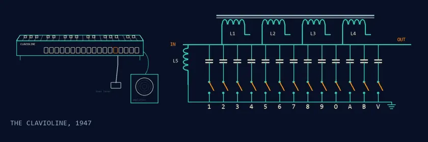

The Clavioline, 1947
Turns the FM-1 into the Clavioline, a pioneering synthesizer behind the Space Age sounds of "Telstar". Recreated from original circuit diagrams, with components traced individually to reproduce its distinctive tone-forming network. Thirteen tone tablets interact through a simulated coil network, while percussive attack, three-speed vibrato and sub-octaves further shape the sound.
The real firmware, running in your browser. Sound starts when you press it.
Controls
The Clavioline plays one note at a time. Hold several keys and the highest sounds; slide between held keys and the note changes without a new attack.
KEYS
Play. MIDI notes in, over USB or the TRS jack, play too.
GLO
STOPS mode: the keys become the tablets to modify the sound. GLO or HOME goes back.
PRESETS knob
The knee lever: the expression swell. Pushing it drives the valve amplifier harder. MIDI CC 11 moves it too.
SELECT knob
43 voicings, drawn from historical lists, then 4 user slots.
OCT− / OCT+
The coupler: LOW, MED or HIGH.
MASTER
Volume.
ALGORITHM
Shift the 27 keys up an octave to reach the top of the original's 36.
SAVE
Store the tablets and coupler in the user slot shown.
SEQ
Options the original didn't have, to help recreate an authentic sound: pluck decay, knee lever speed, portamento.
KNOB 1
Fine tuning.
The stops - press GLO
The keys become the tablets to modify the sound. Most tablets switch capacitors and resistors into one shared network of coils, so they don't simply add up: each changes what the others do. That's how a short row of switches imitated violins, oboes and organs.
| IIIIII | Vibrato speed, fast to slow (6.5, 5.5, 4.5 Hz) |
| + | Vibrato depth: deep instead of shallow |
| IpIIp | One and two octaves below, soft (Concert model) |
| IfIIf | One and two octaves below, loud |
| 1–9 | Resonances that combine: 1 and 2 strong formants, 3 and 4 softer, 5 and 6 colour with others, 7 to 9 brighter |
| O | Smooth: damps the resonances |
| A | Vocal: a forward mid-range |
| B | Reedy: thin, the bass cut away |
| V | Veiled: darker upper harmonics |
| P | Pluck: each note starts with a sharp peak, matched to a recording of a real Clavioline |
Preset sounds
Voicings come from a 1952 Electronic Engineering table and Selmer's instrument cards (and three brand new sounds). Press ▶ for a recording, or Load to put it on the device above and play it yourself.
Behind the sound

Rebuilt from the blueprints. This recreation began with a 1952 technical article, factory drawings and the inventor's patent. The circuits were traced component by component to reconstruct the Clavioline's unusual tone-forming network.
8,192 ways to shape a sound. The 13 tone tablets work together, not independently. An early version simulated the entire circuit in real time, but overwhelmed the FM-1's processor. Now all 8,192 combinations are calculated in advance and packed into compact digital filters.
Tested against the real thing. Recordings of a surviving Clavioline helped refine the sound. Some details remain educated estimates: the original drawings never specified the coils' values.
Not a collection of sampled sounds, but an attempt to bring a 1947 electronic instrument back to life.